天彩美术丰富的教学和快乐的创造体验，将为您的孩子获得一个健康活跃的右脑、 一个流畅逻辑的左脑、一双善于发现的眼睛、一种热爱艺术的修养、一份敢于创造的勇气、 一生表达畅想的能力。
天彩美术丰富的教学和快乐的创造体验，将为您的孩子获得一个健康活跃的右脑、 一个流畅逻辑的左脑、一双善于发现的眼睛、一种热爱艺术的修养、一份敢于创造的勇气、 一生表达畅想的能力。
常年招生 小班授课 因人施教 寓教于乐 渥太华天彩美术学校，为学生营造了一个充满浓郁艺术氛围的绘画环境，本着因人施教的原则，采用多元化，多层次的教学模式，寓教于乐，以最适合孩子的方式，来调动各年龄段学生对绘画的好奇心和积极性，激发学生的兴趣，创作有特色的艺术作品。 “天彩美术”在结合东西方美术教育的基础上，依据儿童绘画的心理特征和造型能力的特点，开创出自己的一套独特的行之有效的,适应当代儿童绘画特点的美术教学系统。 “天彩美术”不但提供高质量的专业美术课程，同时定期组织学生作品展览，与社会互动交流。向学生提供国际国内参展，参赛机会，并通过各种媒体，为孩子们创造展示艺术才能的舞台。
绘画是孩子们的美丽游戏，绘画也让孩子们心中恬静~~~~变着法儿的给孩子绘画的兴趣，是“天彩美术”执着多年的教学理念。绘画有了吸引力，孩子便有了绘画的冲动，很多绘画技巧可以用游戏方式来得以体现，适合孩子的教学方式就是最好的、最恰当的办法。
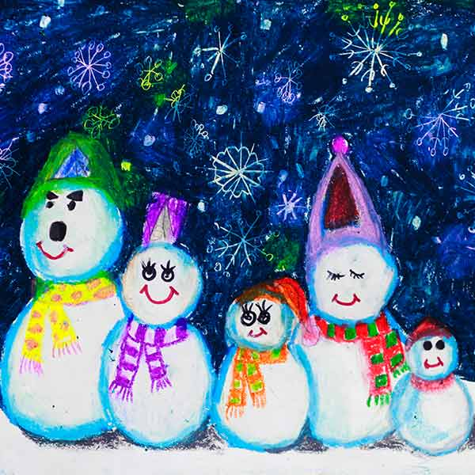


 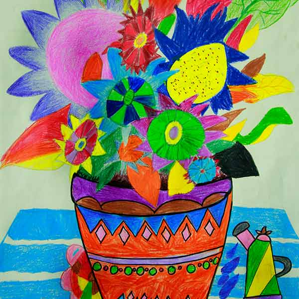
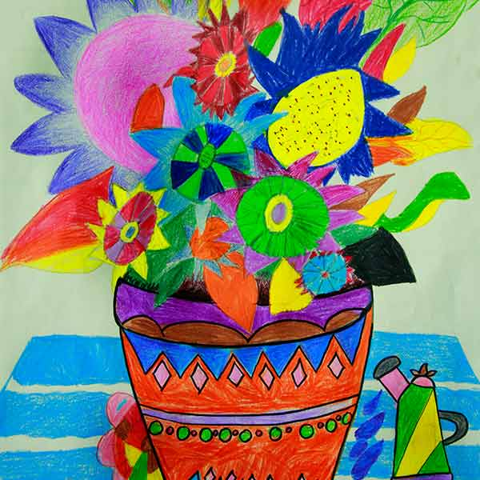


天彩画室18名学员参加“全国青少年儿童文化艺术（北美赛区）展”，其中14名学员获得各级奖项。


“天彩画室”40余名学员参加“2014渥太华华人家庭春节联欢会”的社区展览活动。


 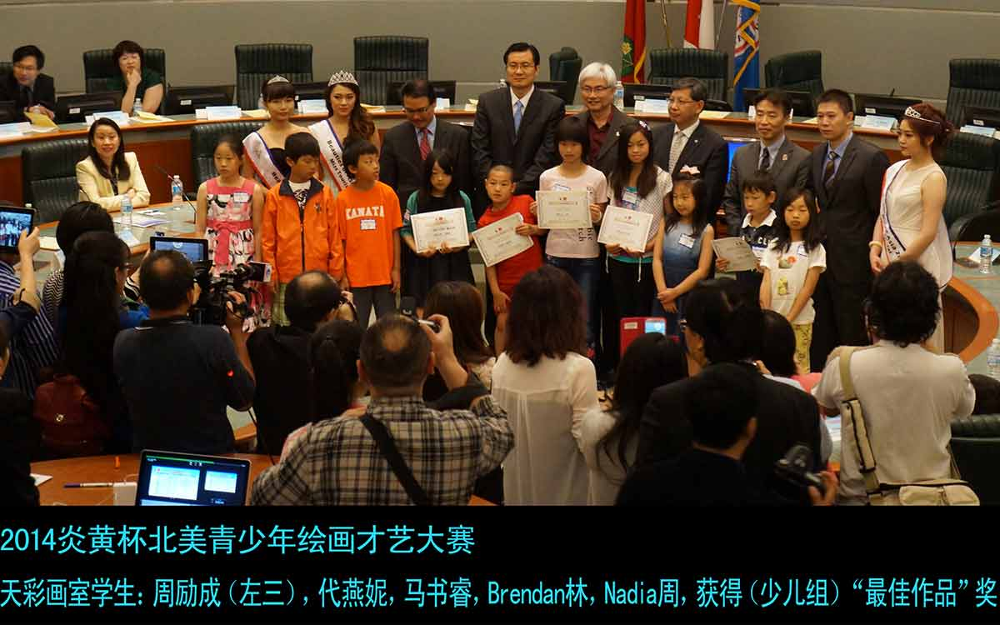
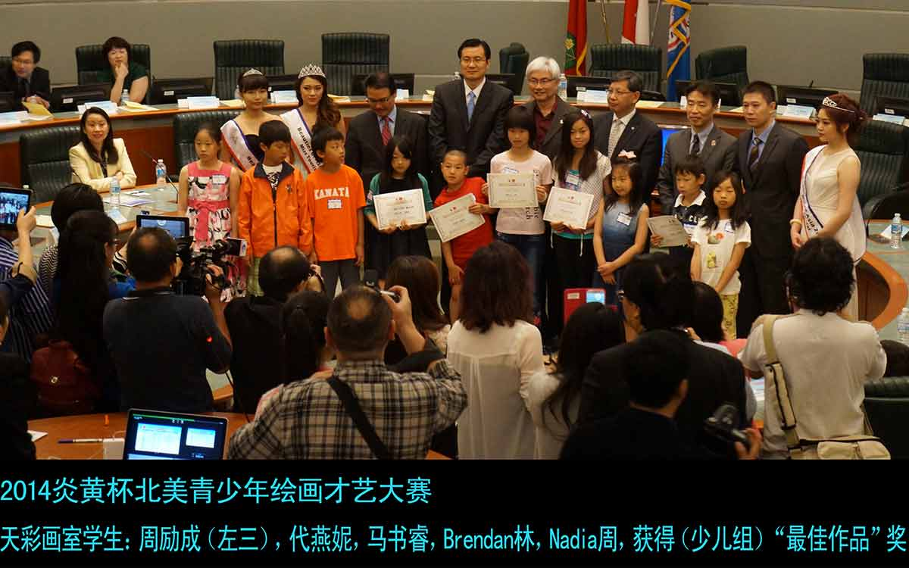


“天彩画室”36名学员参加“2014炎黄杯北美青少年绘画才艺大赛”，25名学员获得各级奖项；其中三名学员分别获得金奖。“天彩画室”荣获“艺术恩师奖”。

 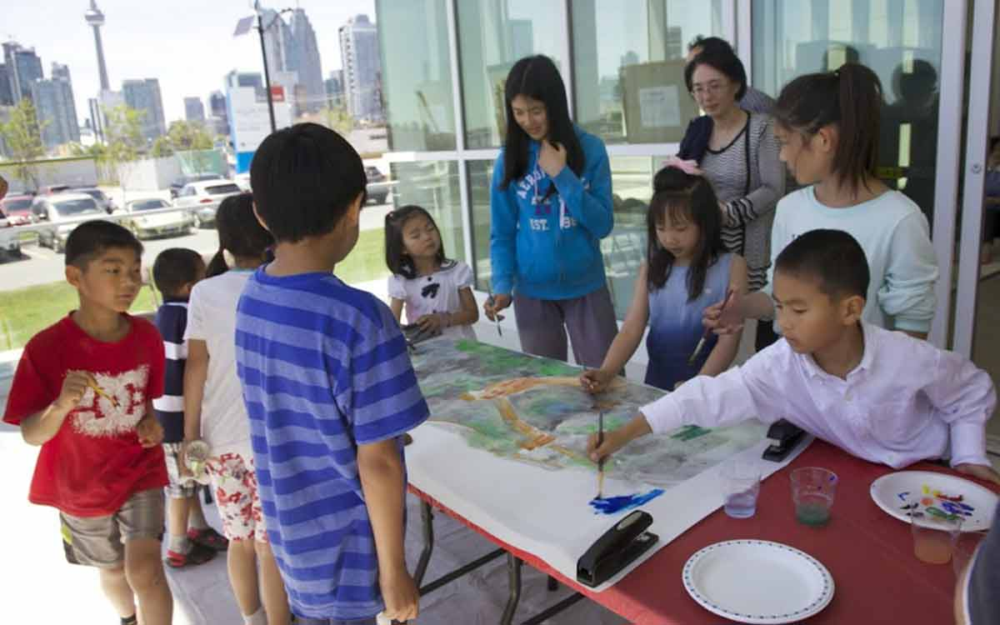
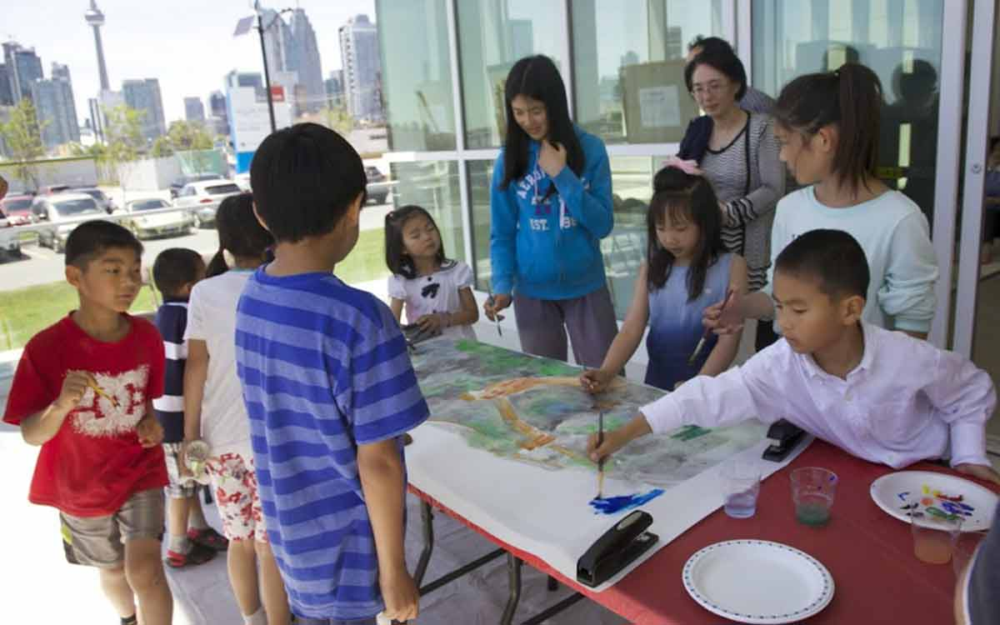

“天彩画室” 率部分获奖学员作品，参加公益拍卖活动，捐赠“榕树下智障中心”。


“天彩画室” 邀请所有新老学员，朋友及家人参加画展和圣诞聚会，开开心心迎接2015年。


 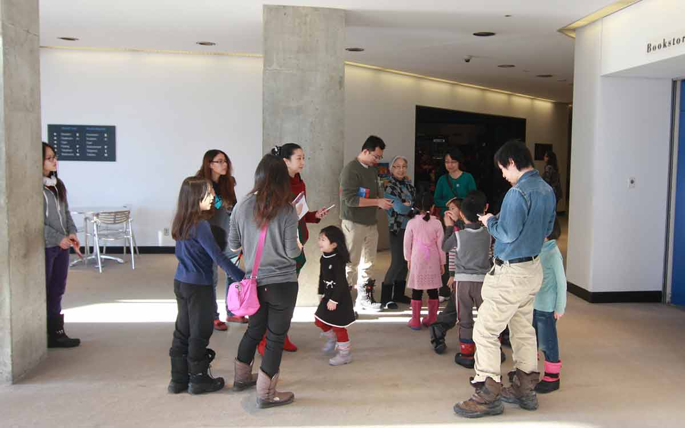
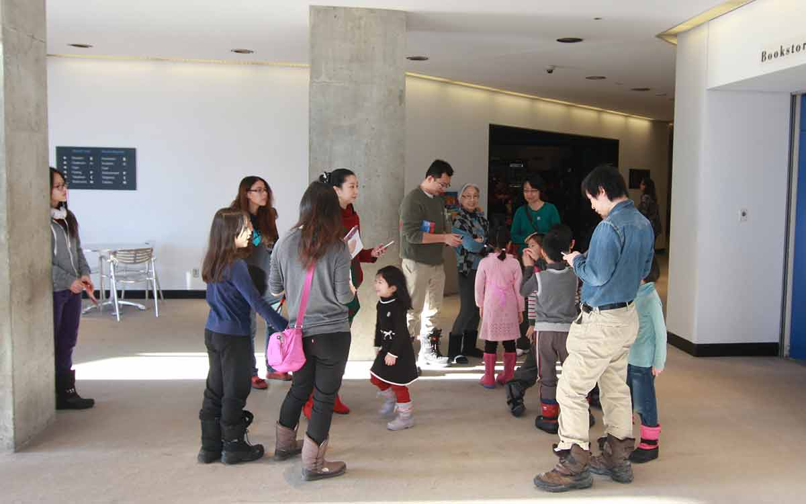
“天彩画室”组织学员去加拿大美术馆看美术展。


“天彩美术“率32名学生参加在温哥华举办的第十届国际青少年漫画大赛（北美赛区）的比赛，最后12名学生入围全球决赛。


 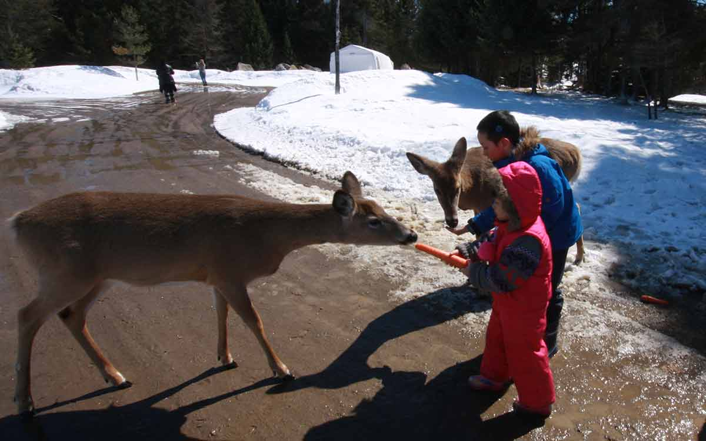
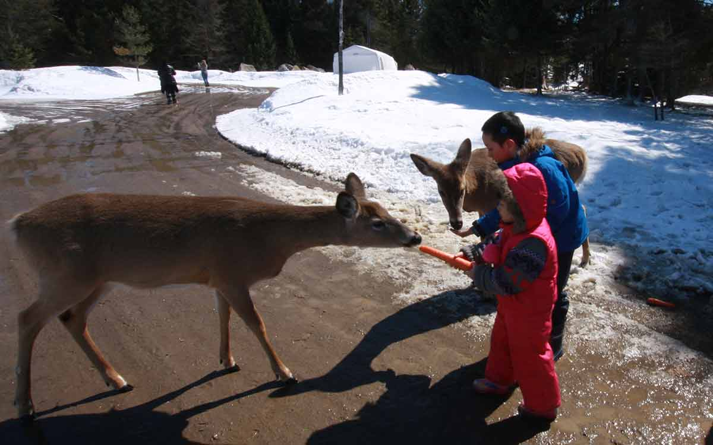
组织去“Parc Omega”野生动物园。
“渥太华天彩美术学校”在结合东西方美术教育的基础上，依据儿童绘画的心理特征和造型能力的特点，开创出自己的一套独特的行之有效的,适应当代儿童绘画特点的美术教学系统。 “天彩美术”科学的教学方法，结合了绘画艺术、儿童心理学、情景训练等多种科学，能迅速地帮助孩子加强注意力、观察力，发展想象力、审美能力和绘画能力，并能取得立竿见影的效果。 “天彩美术”课程是有顺序性，连贯性，课程环环相扣，针对不同年龄段的孩子，不同的深度，不同的教法，不同的要求，从而使我们的课程内容丰富，而各年龄段又有衔接，让学生的兴趣不断轮换，各个年龄段的学员形成阶梯，程度不断加深。通过持续学习， 孩子们在绘画上的进步，是有目共睹，令人惊喜的。
“天彩美术”的教学，不仅只是让学生们在绘画能力上有所提高，更是通过绘画，使孩子在美育修养，艺术素质上得以提高。
电话：613-884-4328
Email：artstiancai@gmail.com
地址：57 Palsen Street Ottawa, ON